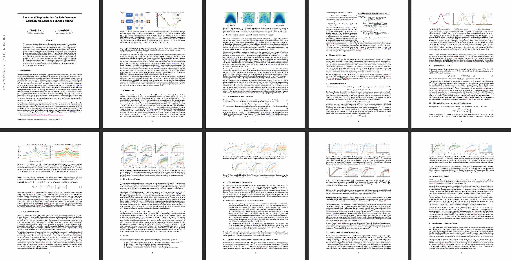

{kind=link}
We propose a simple architecture for deep reinforcement learning by embedding inputs into a learned Fourier basis and show that it improves the sample efficiency of both state-based and image-based RL. We perform infinite-width analysis of our architecture using the Neural Tangent Kernel and theoretically show that tuning the initial variance of the Fourier basis is equivalent to functional regularization of the learned deep network. That is, these learned Fourier features allow for adjusting the degree to which networks underfit or overfit different frequencies in the training data, and hence provide a controlled mechanism to improve the stability and performance of RL optimization. Empirically, this allows us to prioritize learning low-frequency functions and speed up learning by reducing networks’ susceptibility to noise in the optimization process, such as during Bellman updates. Experiments on standard state-based and image-based RL benchmarks show clear benefits of our architecture over the baselines.
Learned Fourier Feature Architecture
Controlling the initialization variance of the Fourier basis changes the frequency-dependent convergence rate of the network. High variance leads to overfitting, whereas low variance yields a smooth function.

Controlling Frequency-dependent Learning Rates
Training Q-networks via the Bellman update can potentially amplify noise that is present due to bootstrapping, function approximation, and SGD. The "spiky" resulting function is inaccurate and can often diverge. Vanilla MLPs are susceptible to this problem, but our learned Fourier feature architecture -- by not fitting high frequencies in the target values -- can minimize the impact of noise and learn accurately.
{kind=link}
Source Code
We have released our implementation in PyTorch on the github page. Try our code!
|
|
Paper and Bibtex
|

|
Citation |
|
@inproceedings{
li2021functional,
title={Functional Regularization for Reinforcement Learning
via Learned Fourier Features},
author={Alexander Cong Li and Deepak Pathak},
booktitle={Thirty-Fifth Conference on Neural
Information Processing Systems},
year={2021},
url={https://openreview.net/forum?id=uTqvj8i3xv}
}
|